Buildings 264
Sort
 Balfron Tower1967 · London
Balfron Tower1967 · London Walden 71975 · Sant Just Desvern
Walden 71975 · Sant Just Desvern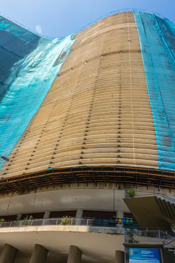
Copan Building1966 · Sao Paulo Marina City1964 · Chicago
Marina City1964 · Chicago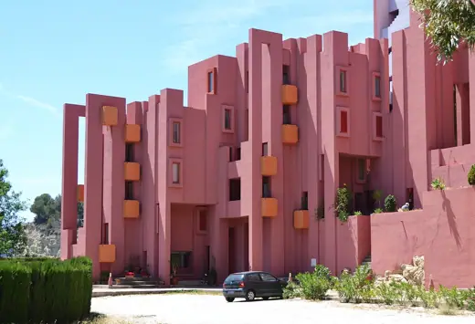
La Muralla Roja1973 · Calp Florey Building1971 · Oxford
Florey Building1971 · Oxford Park Hill1961 · Sheffield
Park Hill1961 · Sheffield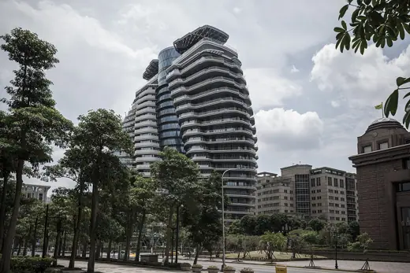
Tao Zhu Yin Yuan2018 · Taipei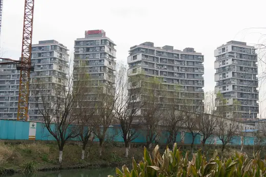
Vertical Courtyard Apartments2007 · Hangzhou Alexandra Road Estate1978 · London
Alexandra Road Estate1978 · London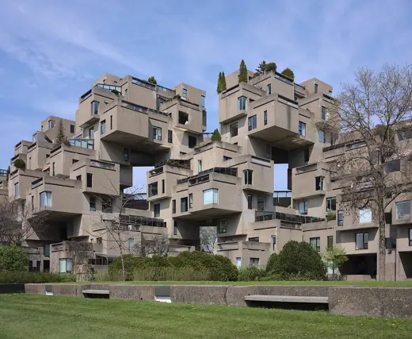
Habitat 671967 · Montreal Casa Milà1912 · Barcelona
Casa Milà1912 · Barcelona 860-880 Lake Shore Drive1951 · Chicago
860-880 Lake Shore Drive1951 · Chicago The Interlace2013 · Singapore
The Interlace2013 · Singapore Mountain Dwellings2008 · Copenhagen
Mountain Dwellings2008 · Copenhagen Sluishuis2022 · Amsterdam
Sluishuis2022 · Amsterdam Kavanagh building1936 · Buenos Aires
Kavanagh building1936 · Buenos Aires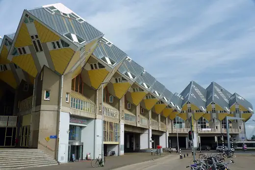
Cube Houses1984 · Rotterdam Vancouver House2020 · Vancouver
Vancouver House2020 · Vancouver 53W532019 · New York
53W532019 · New York Karl-Marx-Hof1930 · Vienna
Karl-Marx-Hof1930 · Vienna Lake Point Tower1968 · Chicago
Lake Point Tower1968 · Chicago Pinnacle@Duxton2009 · Singapore
Pinnacle@Duxton2009 · Singapore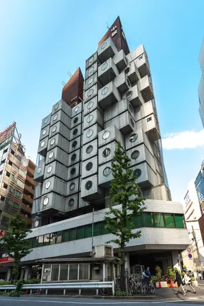
Nakagin Capsule Tower1972 · Tokyo 56 Leonard Street2017 · New York
56 Leonard Street2017 · New York One Central Park2014 · Sydney
One Central Park2014 · Sydney Graduate House, University of Toronto2000 · Toronto
Graduate House, University of Toronto2000 · Toronto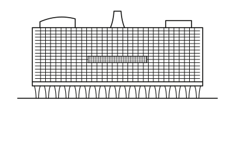
Unité d'Habitation1952 · Marseille 8 House2010 · Copenhagen
8 House2010 · Copenhagen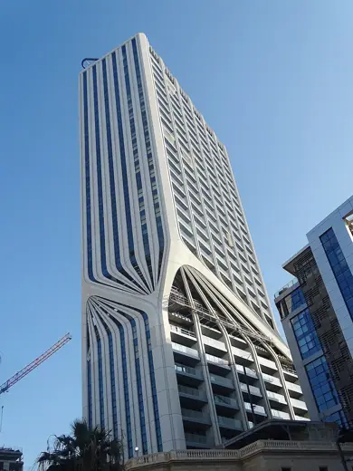
Mercury Tower2023 · St. Julian's WoZoCo1997 · Amsterdam
WoZoCo1997 · Amsterdam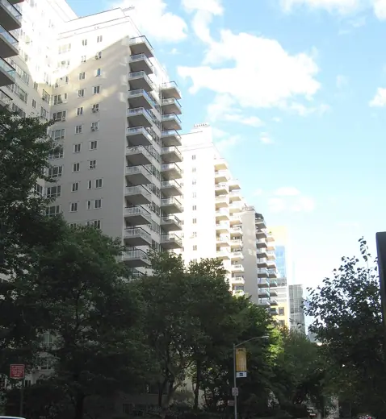
Manhattan House1951 · New York Casa Calvet1900 · Barcelona
Casa Calvet1900 · Barcelona Casa Batlló1906 · Barcelona
Casa Batlló1906 · Barcelona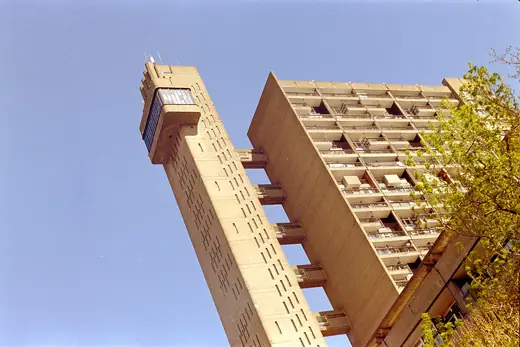
Trellick Tower1972 · London Weissenhof Estate1927 · Stuttgart
Weissenhof Estate1927 · Stuttgart Aqua Tower2009 · Chicago
Aqua Tower2009 · Chicago Majolikahaus1899 · Vienna
Majolikahaus1899 · Vienna Via 57 West2016 · New York
Via 57 West2016 · New York 8 Spruce Street2011 · New York
8 Spruce Street2011 · New York Byker Wall1982 · Newcastle upon Tyne
Byker Wall1982 · Newcastle upon Tyne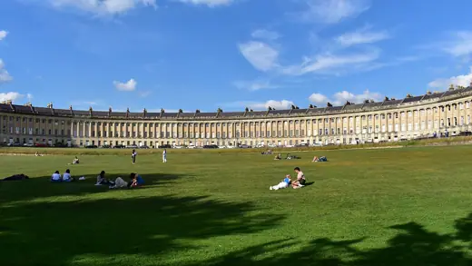
Royal Crescent1774 · Bath Turning Torso2005 · Malmö
Turning Torso2005 · Malmö Hufeisensiedlung1927 · Berlin
Hufeisensiedlung1927 · Berlin Mirador2005 · Madrid
Mirador2005 · Madrid